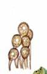
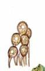

| Home |
| SUNFLOWER |
MAJOR DISEASES |
| 1. Root rot or charcoal rot |
| 2. Leaf blight |
| 3. Rust |
| 4. Head rot |
| 5. Powdery mildew |
| 6. Basal rot |
| 7. Necrosis |
| Questions |
| Download Notes |
SUNFLOWER :: MAJOR DISEASE :: RUST
Rust - Puccinia helianthi
Symptoms
Small, reddish brown pustules (uredia) covered with rusty dust appear on the lower surface of bottom leaves. Infection later spreads to other leaves and even to the green parts of the head. In severe infection, when numerous pustules appear on leaves, they become yellow and dry. The black coloured telia are also seen among uredia on the lower surface. The disease is autoecious rust. The pycnial and aecial stages occur on volunteer crops grown during off-season.
Symptoms |
|
Pathogen
The uredospores are round or elliptical, dark cinnamon-brown in colour and minutely echinulated with 2 equatorial germpores. Teliospores are elliptical or oblong, two celled, smooth walled and cheshnut brown in colour with a long, colourless pedicel.
   |
Uredospores and Teliospores |
Favorable Conditions
- Day temperature of 25.5° to 30.5°C with relative humidity of 86 to 92 per cent enhances intensity of rust attack.
Disease cycle
The pathogen survives in the volunteer sunflower plants and in infected plant debris in the soil as teliospores. The disease spreads by wind-borne uredospores from infected crop.
Management
- Use of tolerant and resistant varieties
- Crop rotation should be followed.
- Previous crop remains should be destroyed.
- Removal of crop residues
- Spray Mancozeb at 2kg/ha.